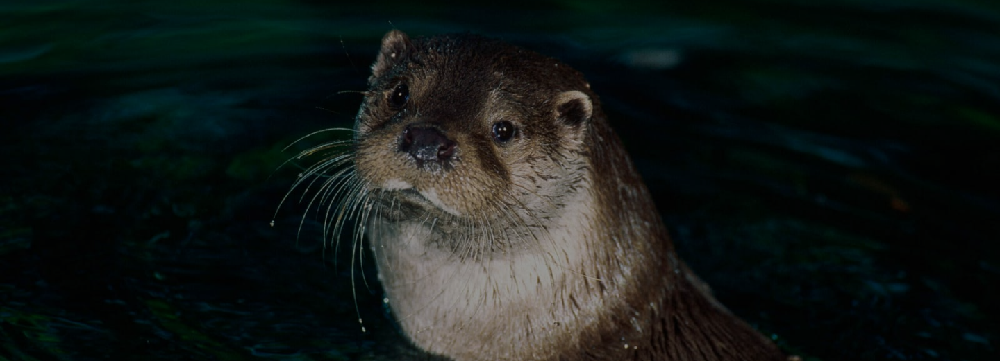

ORIGINE: ANIMALE
LONTRA
La lontra è un mammifero acquatico che vive in Africa, in Italia e in un’ area vasta che va dalla Penisola Iberica al Giappone.
INQUINAMENTO ACQUIFERO
PERCHÈ È IN VIA DI ESTINZIONE?
La lontra è un animale che per via della sua folta pelliccia veniva cacciata per la creazione di abiti, ciò non accade più infatti in molti luoghi essa è ricomparsa, ma ancora è fortemente in pericolo per via dell'inquinamento.
- Dimensioni: è di piccole dimensioni, raggiunge i 30 kg e 1 metro di lunghezza.
- Vita media: 10/15 anni.
- Colore: manto marrone e sulle zampe, ventre e petto è più chiara.
- Alimentazione: pesci, piccoli uccelli, crostacei e piccoli mammiferi.
- Stile di vita: è un animale estremamente solitario e solo nel periodo dell'accoppiamento rimane insieme ai suoi simili.
- Curiosità: è un animale che si è adattato moltissimo al luogo in cui vive e questo lo si può vedere dalle caratteristiche del suo corpo.